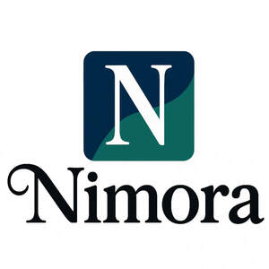

Trade Mark Journal No.2025/021 23 May 2025
UK00004198655 5 May 2025 (24)

- Class 24
- Mattress covers; Ticks (mattress and pillow coverings); Fabric table toppers; Contoured mattress covers; Fabric bed valances; Crib bumpers [bed linen]; Valanced bed sheets; Mattress slips [other than incontinence]; Bed valances; Ticks [mattress covers]; Covers for mattresses; Cot bumpers [bed linen]; Shams (Pillow -); Pillow shams; Quilt bedding mats; Bed pads; Pillowcases [pillow slips]; Fitted bed sheets; Bed linen; Linen for the bed; Linen (Bed -); Quilted blankets [bedding]; Bed blankets; Blankets (Bed -); Bed linen of paper; Bed linen and blankets; Bed sheets of paper; Bed blankets made of cotton; Canopies (bed linen); Flat bed sheets; Bed quilts; Bed sheets of plastic [not being incontinence sheets]; Bed sheets of plastic, not being incontinence sheets; Silk bed blankets; Sleeping bag sheet liners; Crib sheets; Valanced bed covers; Futon quilts; Bed linen and table linen; Valances for beds; Bed canopies; Bed coverings; Comforters for beds; Protective loose covers for mattresses and furniture; Comforters (bedding); Pillow covers; Bed covers of paper; Sofa blankets; Infants' bed linen; Bed covers; Valance sheets; Bed warmer covers; Pillow slips; Covers for pillows; Bed skirts; Textiles; Textiles and substitutes for textiles; Textiles for furnishings; Textile fabrics; Textiles for upholstery; Tablecloths of textiles; Non-woven textiles; Viscose textiles; Polyester textiles; Handkerchiefs of textiles; Tapestries of textile; Textile fabrics for the manufacture of clothing; Textile fabrics for use in manufacture; Textile fabrics for use in the manufacture of furniture; Household textiles; Towels of textiles; Textile fabrics for lingerie; Textile fabrics for use in the manufacture of sportswear; Textile fabrics for use in the manufacture of towels; Non-woven textile fabrics; Textile fabrics for use in the manufacture of bedding; Quilts of textile; Textile fabrics for use in the manufacture of curtains; Textile tablecloths; Tablecloths of textile; Honeycomb materials [textiles]; Textile fabrics for use in the manufacture of pillowcases; Bedroom textile fabrics; Patterned textiles for use in embroidery; Tablemats of textile; Coated textiles; Furniture coverings of textile; Coverings (Furniture -) of textile; Fabrics being textile piece goods; Fabrics being textile piece goods for use in embroidery; Non-woven textile fabrics for use as interlinings; Textiles made of wool; Fabrics being textile piece goods for use in tapestry; Textile fabrics in the piece; Textile fabric; Textile fabrics for use in the manufacture of beds; Textiles made of cotton; Textiles made of linen; Textile fabrics for use in the manufacture of sheets; Textile goods for use as bedding; Plastic woven textile materials for use in agriculture; Doilies of textile; Furnishing fabrics being textile piece goods; Waterproof textile fabrics; Textile fabrics for use in the manufacture of wall coverings; Fabrics being textile piece goods for use in manufacture; Fabrics for textile use; Substitutes for textiles; Handkerchiefs of textile; Textile handkerchiefs; Silk fabrics for furniture; Curtains of textiles or plastic; Woollen fabrics; Reinforced fabrics [textile]; Curtains of textile; Rubberized textile fabrics; Textile fabrics for making into linens; Textile goods, and substitutes for textile goods; Fabrics being textile piece goods for use in patchwork; Textile napkins; Textiles for food wrapping; Suiting materials [textile]; Towels of textile; Towels [textile]; Towels [of textile]; Textile handkerchieves; Textile fabrics for making into clothing; Hand-towels made of textile fabrics; Textiles for making articles of clothing; Curtains made of textile fabrics; Textile fabrics for making up into household textile articles; Friezes of textile; Materials (Textile -) for use in the manufacture of footwear; Woven fabrics for furniture; Fabrics being textile piece goods made of mixtures of fibres; Apparel fabrics; Linings [textile]; Textile fabric piece goods for use in the manufacture of clothing; Napery [textile]; Napery of textile; Jute fabrics; Serviettes of textile; Upholstery fabrics; Furnishing and upholstery fabrics; Fireproof upholstery fabrics; Fabrics; Woven fabrics for cushions; Upholstery materials; Materials for upholstery; Woven fabrics for sofas; Corduroy fabrics; Furnishing fabrics; Unfitted fabric slipcovers for furniture; Silk fabrics; Non-woven fabrics; Woven fabrics for armchairs; Cotton fabrics; Fabric; Woven fabrics; Non-woven fabrics for use with linings; Fiberglass fabrics, for textile use; Fiberglass fabrics for textile use; Fabrics for the manufacture of furnishings; Woven linen fabrics; Batik fabrics; Woven furnishing fabrics; Lace fabrics; Chenille fabric; Textile fabric piece goods for the manufacture of upholstered furniture; Fibre fabrics for the manufacture of the exterior coverings of furniture; Fabrics for use in the manufacture of exterior coverings for chairs; Fabrics for use as linings in clothing; Linen [fabric]; Fibreglass fabrics for textile use; Lingerie fabrics; Fabric valances; Fabric curtains; Non-woven fabrics for use with paddings; Crepe fabrics; Inlay materials of non-woven fabrics; Woven silk fabrics; Table covers of non-woven textile fabrics; Precut fabrics for needlecraft; Curtain fabrics; Rubberised fabrics; Fabrics for use in covering armchairs; Flax fabrics; Lining fabrics; Wool yarn fabrics; Waterproof fabrics; Knitted fabrics; Fabric linings for clothing; Fiberglass fabric for textile use; Industrial fabrics; Lining fabrics of textile in the piece; Fabrics for interior decorating; Embroidery fabric; Worsted fabrics; Denim fabric; Fabrics made from linen, other than for insulation; Window furnishing fabrics; Silk fabrics for printing patterns; Fabrics for manufacturing tarpaulins; Unfitted fabric furniture covers; Laminated fabrics; Valances [textile draperies]; Woolen fabric; Interlinings made of non-woven fabrics; Interior decoration fabrics; Polyester fabric; Hemp yarn fabrics; Fabrics for manufacturing garden furniture; Adhesive fabric; Heat-activated adhesive fabrics; Non-woven fabric; Coating fabric; Gauze fabric; Adhesive fabric for application by heat; Waterproof fabric; Adhesive labels (Textile -); Muslin fabric; Moleskin [fabric]; Nylon fabric; Chenile fabric; Crepe [fabric]; Jute fabric; Adhesive materials in the form of stickers [textile]; Adhesive fabrics for application by heat; Rayon fabric; Flannel [fabric]; Cotton fabric; Elastic woven fabrics; Silk fabric for printing patterns; Hemp fabric; Non-woven reinforcing fabrics; Curtain fabric; Jersey material [fabric]; Adhesive tags of textile for bags; Non-woven fabrics in the form of sheeting for use in manufacture; Tensioning fabrics for upholstery; Fabric coated with rubber or plastics; Polypropylene spunbonded non-woven textile fabrics; Lingerie fabric; Elastic yarn mixed fabrics; Elastic fabrics for clothing; Fabric valences; Knitted fabric; Foulard [fabric]; Resin impregnated textile fabrics; Mitts made of non-woven fabric for washing the body; Woollen fabric; Fabrics made from acrylic, other than for insulation; Polymer coated fabrics; Fabric for footwear; Footwear (Fabric for -); Jersey [fabric]; Synthetic fiber fabric; Fabric, impervious to gases, for aeronautical balloons; Balloons (Fabric impervious to gases for aeronautical -); Aeronautical balloons (Fabric impervious to gases for -); Afghans; Afghans [knitted covers]; Quilts; Eiderdowns [quilts]; Woolen blankets; Knitted fabrics of wool yarn; Coverlets [bedspreads]; Baby blankets; Knitted fabrics of chemical-fiber yarn; Knitted fabrics of silk yarn; Knitted fabrics of cotton yarn; Tricot quilts; Lap blankets; Woollen blankets; Quilts of towel; Lap rugs; Silk blankets; Coverlets; Counterpanes; Cot blankets; Blankets with sleeves; Bedspreads; Cotton blankets; Yoga blankets; Eiderdowns [down coverlets]; Hooded blankets; Quilts made of terry cloth; Swaddling blankets; Textile fabrics for making into blankets; Wool loop knit fabrics; Down quilts; Silk filled quilts; Kit comprised of fabrics for making quilts; Knit lace fabrics; Textile printers' blankets; Printers' blankets of textile; Blankets for household pets; Picnic blankets; Receiving blankets; Loop knit fabrics; Travelling rugs [lap robes]; Cotton knitted fabric; Eiderdowns; Badges made of fabric material; Piece goods made of woven plastic material; Piece goods made of non-woven plastic material; Curtains made from textile materials; Curtains made of textile materials; Towels made of textile materials; Labels made of textile materials; Breathable piece goods made of textile materials bonded with plastics; Curtain loops made of textile materials; Breathable piece goods made of textile materials bonded with rubber; Plastic material substitutes for fabric; Textile piece goods made of plastics materials; Piece goods made of textile materials bonded with plastics; Fabrics made from silk, other than for insulation; Fabrics made from polyester, other than for insulation; Window covering products made of textile material; Fabrics made from nylon, other than for insulation; Piece goods made of textile materials bonded with rubbers; Plastic material [substitute for fabrics]; Shower curtains made of plastic material; Small curtains made of textile materials; Fabrics made from cotton, other than for insulation; Bed linen made of non-woven textile material; Filters made of textile materials; Face towels [made of textile materials]; Plastic material [substitutes for fabrics]; Non-woven fabrics made substantially of paper; Fabrics made from wool, other than for insulation; Table mats made of textile materials; Textiles made of synthetic materials; Fabrics made from synthetic threads; Textiles made of flannel; Loose covers made of textile materials for furniture; Textile substitute materials made from synthetic materials; Curtaining material being textile piece goods; Fabrics [textile piece goods] made of carbon fibre; Furniture coverings made of plastic materials; Textile piece goods made of cotton; Drapes in the nature of curtains made of textile materials; Fabrics made from synthetic yarns; Fitted toilet lid covers [made of fabric or fabric substitutes]; Textiles made of satin; Fabrics made from ceramic fibres, other than for insulation; Household textile articles made from non-woven materials; Textile material; Material (Textile -); Curtains of textile material; Printing blankets of textile material; Fabrics made from synthetic fibres [other than insulation]; Fleece made from polyester; Place mats of textile material; Materials for use in making clothes; Curtain holders of textile material; Fabrics made from artificial fibres [other than for insulation]; Fabrics made from artificial fibres [for insulation]; Sleeping bags; Sleeping bags [sheeting]; Sleeping bags for babies; Sleeping bags for camping; Bags for sleeping bags [specifically adapted]; Sleeping bag liners; Bivouac sacks being covers for sleeping bags; Curtains of textile or plastic; Curtains and lace curtains of textiles or plastic; Shower curtains of textile or plastic; Plastic substitutes for fabrics; Disposable bedding of textile; Disposable tablecloths of textile; Coverings of textile and of plastic for furniture (unfitted); Household textile goods; Coverings of textile and of plastic for furniture (not fitted); Household textile piece goods; Textile piece goods for making curtains; Sponge cloths [textile piece goods]; Fire-retardant textile shower curtains; Cloths of woven textile material for washing the body [other than for medical use]; Banners of textile or plastic; Curtain holders of textile materials; Bunting of textile or plastic; Cloths of non-woven textile material for washing the body [other than for medical use]; Covered rubber yarn fabrics [for textile use]; Textile materials for use in the manufacture of blinds; Flags of textile or plastic; Textile goods for making headshawls and yashmaghs; Fabrics being textile goods in roll form; Textile materials for use as window coverings; Fabrics of man-made fibres being textile goods in piece form; Paper yarn fabrics for textile use; Textile piece goods for making-up into towels; Kitchen towels [textile]; Kitchen towels of textile; Make-up removal cloths [textile], other than impregnated with cosmetics; Household textile articles; Textile piece goods for clothing; Textile piece goods for use in the manufacture of protective clothing; Table linen of textile; Ballistic resistant fabrics; Flame resistant fabrics; Water resistant fabrics; Heat resistant fabrics [other than for insulation]; Breathable waterproof fabrics; Waterproof fabrics for use in the manufacture of jackets; Textiles treated with a flame resistant finish; Waterproof fabrics for use in the manufacture of gloves; Waterproof fabrics for use in the manufacture of trousers; Water breathable fabrics; Waterproof fabrics for use in the manufacture of hats; Textiles treated with a fire resistant finish; Woven cloth with breathable polyurethane coating for water proof garments; Coated fabrics for use in the manufacture of rainwear; Chemical fiber fabrics; Coated fabrics; Vapour permeable fabrics; Fabrics woven from ceramic fibres, other than for insulation; Non-woven fabrics of synthetic fibres; Synthetic fiber fabrics; Flame retardant fabrics [other than asbestos]; Multiple-ply antistatic fabrics; Plastic reinforced fabrics; Knitted elastic fabrics for sportswear; Metal fiber fabrics; Chemical fibre mixed fabrics; Textile piece goods (Polyurethane coated -) for making waterproof clothing; Fabrics of chemically produced fibres, other than for insulation; Fibre fabrics for use in the manufacture of linings of shoes; Textiles impervious to water but permeable to moisture; Fabrics of inorganic fibres, other than for insulation; Fibre fabrics for use in the manufacture of linings of bags; Non-woven fabrics of natural fibres; Fabrics of organic fibres, other than for insulation; Chemical fibre loop knit fabrics; Fabrics made of mixed synthetic and natural fibres, other than for insulation; Fabrics made from natural fibres, other than for insulation; Coated fabrics for use in the manufacture of luggage; Plastic banners; Plastic flags; Pennants [flags], other than of paper; Plastic bunting; Plastic pennants; Bunting flags; Banners; Cloth banners; Banners of textile; Banners textile; Flags and pennants of textile; Cloth flags; Fabric flags; Brocade flags; Cloth pennants; Nylon flags; Flags of textile; Flags, not of paper; Pennants of textile; Bar cloths; Cloths; Table cloths; Glass cloths [towels]; Plastic table cloths; Table cloths of textile; Tea cloths; Kitchen towels of cloth; Labels of textile for bar codes; Cloth napkins; Table cloths made of textile; Drink coasters of table linen; Cotton cloths; Rubberized cloths; Table cloth of textile; Textile napkins [table linen]; Household cloths for drying glasses; Table cloths not of paper; Table cloths, not of paper; Face cloths of towelling; Table napkins of textile; Napkins of textile (Table -); Dish cloths of textile for drying; Cloth coasters; Face cloths; Coasters [table linen]; Billiard cloth; Disposable cloths; Curtain holders of cloth; Face cloths of textile; Cloth; Oil cloths; Mats of textile for beer glasses; Household cloths for drying dishes; Waterproof cloths; Textile smallwares [table linen]; Linen cloth; Sponge cloths for textile use; Make-up (Napkins for removing -) [cloth]; Cloth napkins for removing make-up; Table linen; Cloths for washing the body [other than for medical use]; Table place setting mats of textile; Cloth handkerchiefs; Cloth napkins for removing makeup; Labels of cloth; Cloth labels; Labels [cloth]; Dinner mats of textiles; Mats of linen; Kitchen and table linens; Bath gloves; Bath mitts; Wash gloves; Washing gloves; Bath towels; Bath wrap towels; Bath linen; Bath sheets (towels); Bath sheets; Large bath towels; Bath linen, except clothing; Linen; Kitchen linen; Bathroom towels; Diapered linen; Linen (Diapered -); Terry linen; Linens; Curtains made of plastics for use in shower baths; Household linen; Linen (Household -); Kitchen towels; Household linen, including face towels; Towels [textile] for kitchen use; Bed clothes; Bed clothes and blankets; Woven fabrics for use in the manufacture of clothing for use in clean rooms; Face towels of textiles; Covers of textile for water closets; Make-up removal towels [textile] other than impregnated with toilet preparations; Towels [textile] for the beach; Linen lining fabric for shoes; Make-up removal towels [textile] other than impregnated with cosmetics; Textile piece goods for making-up into clothing; Household linens; Linen for household purposes; Make-up removal cloths [textile], other than impregnated with toilet preparations; Fabric for use in the manufacture of clothing; Textile piece goods for making bedding covers; Textile hair drying towels; Towels [textile] for use in connection with babies; Mitts (Washing -); Washing mitts; Mitts for washing the body; Washing mitts for toilet use; Towel sheet; Cot sheets; Contour sheets; Towels; Terry towels; Tea towels; Beach towels; Yoga towels; Dish towels; Hooded towels; Hand towels; Turkish towels; Dish towels for drying; Face towels; Golf towels; Glass-cloth [towels]; Children's towels; Turkish towel; Turban towels for drying hair; Textile face towels; Face towels of textile; Hand towels of textile; Shower room curtains; Towels [textile] for use in connection with toddlers; Shower curtains; Textile exercise towels; Japanese cotton towels (tenugui); Bean bag covers; Table covers of plastic; Covers for toilet lids of fabric; Covers for cushions; Cushions (Covers for -); Table covers of damask; Cushion covers; Toilet seat covers of textile; Table covers; Table covers [not of paper]; Fitted toilet lid covers of fabric; Covers (Fitted toilet lid -) of fabric; Covers (fitted toilet lid -)[fabric]; Covers of textile for toilet seats; Duvet covers; Sofa covers; Toilet seat covers; Bed blankets made of man-made fibres; Ready made curtains of textiles; Textiles made of velvet; Fleece made from polypropylene; Ready made curtains of plastics; Ready made curtains; Curtains made of plastics; Crib canopies; Canopies [covers for beds]; Canopy covers; Bed spreads; Bed throws; Bedsheets; Travelling blankets; Coverings for furniture; Coverings for windows; Throws (furniture coverings); Furniture coverings of plastic; Coverings of plastic for furniture; Loose furniture coverings; Coverings (Loose -) for furniture; Loose coverings for furniture; Furniture coverings (unfitted); Padded coverings [hangings of textile] for existing walls; Coverings of plastics for furniture; Protective coverings for furniture [loose]; Cot covers; Chair covers; Covers for duvets; Eiderdown covers; Comforters [covers]; Quilt covers; Covers for eiderdown and duvets; Fitted toilet covers [fabric]; Textile covers for duvets; Seat covers [loose] for furniture; Fitted toilet seat covers of textile; Furniture (Loose covers for -); Covers [loose] for furniture; Loose covers for furniture; Loose covers for garden furniture; Paper pillowcases; Disposable bedding of paper; Table linen, not of paper; Table coverings [not of paper]; Textile piece goods for making cushion covers; Valence linen; Tick [linen]; Bedsheets of leather; Towelling coverlets; Lace table mats not made of paper; Coated woven textile materials; Non-woven textile piece goods; Non-woven fabrics in the form of sheets for use in manufacture; Heat formable non-woven textile materials; Non-woven cloth; Curtain loops of textile material; Tablecloths, not of paper; Fabrics for use in making incontinence pads; Pillowcases; Quilts filled with feathers; Quilts filled with down; Fabrics for making curtains; Quilts filled with stuffing materials; Wall fabrics; Curtains of plastic; Pleated curtains; Blanket throws; Throws; Valances; Curtains; Swags [curtains]; Window curtains; Swags [window treatments]; Swags being window treatments; Curtains for windows; Curtain valences; Door curtains; Curtains for showers; Lace curtains; Vinyl curtains; Furnishing fabrics in the piece; Textile used as lining for clothing; Woollen fabrics for use in the manufacture of trousers; Towelling [textile]; Woollen fabrics for use in the manufacture of jackets; Markers [labels] of cloth for textile fabrics; Duvets; Oilcloth for use as tablecloths; Comforters; Fabrics for shirts; Tapestries [wall hangings], of textile; Billiard cloth [baize]; Billiard table baize; Woolen cloth; Woollen cloth; Silk cloth; Silk [cloth]; Taffeta [cloth]; Rubberized cloth; Flax cloth; Cheese cloth; Vinyl cloth; Jute cloth; Cloth doilies; Loden cloth; Frieze [cloth]; Crepe cloth; Rubberised cloth; Cloth bunting; Gauze [cloth]; Sail cloth; Prayer cloth; Hemp cloth; Denim [cloth]; Zephyr [cloth]; Trellis [cloth]; Printed calico cloth; Calico cloth (Printed -); Marabouts [cloth]; Filtering cloth; Tartan bolting cloth; Cloth for tatami mat edging ribbons; Gummed cloth, other than for stationery; Table runners of plastic; Table runners; Runners (Table -); Table runners of textile; Fabric table runners; Blackout curtains; Drapes in the nature of curtains; Net curtains; Draperies [thick drop curtains]; Drapes; Moquettes [curtains]; Textile curtain pelmets; Curtain tie-backs of textile; Curtain linings; Curtain holdbacks of textile; Curtain holders or tiebacks of textile; Draperies; Curtain material; Pleated shades; Blankets for outdoor use; Children's blankets; Nap raised cloth; Cloth with a raised nap; Curtains [made up or in the piece]; Gift wrap of fabric; Cushion covering materials; Protective covers for furniture [loose]; Indoor and outdoor curtains; Fabrics for industrial use; Bolting cloth; Woven cloth with breathable polyurethane coating sold in the piece; Felt cloth; Woven cloth with breathable polyurethane coating; Gummed waterproof cloth; Borders (textile wall hangings); Wall hangings of textile; Tapestry [wall hangings], of textile; Friezes [textile wall hangings]; Handcrafted textile wall hangings; Wall hangings of silk; Wall hangings; Wall decorations of textile; Mural hangings [textile]; Wall plaques of textile; Curtain holders (Textile -); Textile coasters; Coasters of textile; Waterproofed textile piece goods; Synthetic textile piece goods; Printed textile piece goods; Coated fabrics for use in the manufacture of leather goods; Textile piece goods for use in the manufacture of boots; Laminated textile piece goods having insulating properties; Textile piece goods; Piece goods (Textile -); Textile piece goods for use in the manufacture of shoes; Materials (Textile -) for use in the manufacture of soles; Materials (Textile -) for use in the manufacture of insoles; Composite textile materials; Tissues being textile piece goods; Materials (Textile -) for use in the manufacture of linings for footwear; Textile piece goods for making into clothing; Non-woven piece goods; Fabrics [piece goods]; Rubber covered yarn fabrics; Textile linings in the piece; Textile piece goods for use in the manufacture of industrial filters; Lining fabric for footwear; Lining fabrics for shoes; Knitted elastic fabrics for ladies underwear; Fabric for manufacturing men's outerwear; Jersey fabrics for clothing; Broad woven industrial fabrics; Narrow woven fabrics; Silk base mixed fabrics; Cotton base mixed fabrics; Woven fabrics imitating leather; Wool base mixed fabrics; Hemp base mixed fabrics; Silk-wool mixed fabrics; Spun silk fabrics; Mixed fiber fabrics; Wool-cotton mixed fabrics; Brocade; Brocades; Damask; Velvet; Taffeta; Satin; Cheviot fabric; Fabric linings for headgear; Silk-cotton mixed fabrics; Tulle; Tulle for dressmaking; Fabrics covered with motifs to be embroidered; Canvas for tapestry or embroidery; Knitted elastic fabrics for bodices; Lining fabric for shoes; Zephyr fabric; Hat linings, of textile, in the piece; Linings (Hat -), of textile, in the piece; Ramie fabric; Textile flags used for place settings; Streamers of textile; Hand spun silk fabrics; Traced cloths for embroidery; Embroidery (Traced cloth for -); Traced cloth for embroidery; Ramie fabrics; Flocked fabrics; Piled fabrics; Shirtings; Woollen fabrics for use in the manufacture of coats; Knitted elastic fabrics for gymnastic dresses; Buckram; Esparto fabric; Muslin; Tulle for hatmaking; Flannel; Oilcloth; Bunting; Baby buntings; Hessian; Textile serviettes; Felt pennants; Vapour permeable plastic textile; Napkin liners of textile; Calico; Dimity; Textile fabric of animal skins imitations; Shirt fabrics; Printed fabrics; Printed textile labels; Iron-on cloth labels; Self-adhesive cloth labels; Gummed cloth, other than for stationery purposes; Replacement seat covers [loose] for furniture; Canvas; Canvas for tapestry; Canvas for embroidery; Stretch canvas for embroidery; Tags of textile for attachment to linen; Chair backs [textile articles]; Textile covers [loose] for furniture; Non-woven textile articles; Runners [textile] for table tops; Fibre fabrics for use in the manufacture of articles of clothing; Woven fabrics for making up into articles of clothing; Textiles for making up into articles of clothing; Towels of textile featuring American football team logos; Cheviots [cloth]; Chemical fiber base mixed fabrics; Inorganic fiber mixed fabrics; Inorganic fibre mixed fabrics; Semi-synthetic fiber fabrics; Regenerated fiber yarn fabrics; Hemp-cotton mixed fabrics; Hemp-silk mixed fabrics; Hemp-wool mixed fabrics; Fabrics of carbon fibre, other than for insulation; Filter fibers [textile]; Kashmir fabric; Moquettes [fabric]; Fabric cascades; Japanese ceremonial wrapping cloth (Fukusa); Mats [coasters] of textile; Mats (Drip -) of textile for glasses; Fabric place mats; Place mats of textile; Textile place mats; Table mats, not of paper; Table mats (not of paper); Japanese general wrapping cloth (Furoshiki); Pocket handkerchiefs of textile; Textile labels; Labels (textile); Labels of textile; Woven labels; Labels (Textile -) for marking linen; Labels (Textile -) for marking clothing; Labels (Textile -) for identifying linen; Labels of textile for identifying clothing; Labels (Textile -) for identifying clothing; Sew-on tags of textile for clothing; Textile napkins for removing makeup; Cloths for removing make-up; Make-up pads of textile for removing make-up; Make-up removal wipes [textile] other than impregnated with toilet preparations; Make-up removal wipes [textile] other than impregnated with cosmetics; Make-up pads of textile; Diaper changing cloths for babies; Materials for use in filtration [textile]; Textile filter materials; Filtering materials of textile; Tablemats, not of paper; Reusable wax coated fabrics for wrapping food; Fabric for use in the manufacture of bags; Fabric for use in the manufacture of wallets; Fabric for use in the manufacture of purses; Woollen fabrics for use in the manufacture of suits; Fabric for use in the manufacture of umbrellas; Non-woven fabrics in the form of rolls for use in manufacture; Non-woven fabrics in the form of blanks for use in manufacture; Fabric for use in the manufacture of cases; Foils of plastics for the manufacture of disposable linen; Fabrics for manufacturing tents; Foils of plastics for the manufacture of disposable clothes; Duvets filled with goose down; Duvets filled with goose feathers; Shams; Sanitary flannel; Flannel (Sanitary -); Face flannels of textile; Waste cotton fabrics; Fabrics for use in making diapers; Fabrics for use in making jerseys; Grid-type fabrics; Quilts filled with synthetic stuffing materials; Quilts filled with half down; Pelmets; Drapery; Soft pelmets; Underblankets; Lap-robes; Pillowcovers; Sheets of sailcloth for screening; Velours for furniture; Textiles for interior decorating; Place mats, not of paper; Mats (Place -), not of paper; Individual place mats made of textile; Textile tissues; Face flannels in the form of gloves; Fleece made from copolymers; Foils of plastics for the manufacture of disposable capes; Frieze; Insecticide-treated mosquito nets; Mosquito nets; Nets (Mosquito -); Insect protection nets; Fly netting of plastic; Shrouds; Artificial silk; Dust ruffles; Woven fabrics imitating animal skin; Mesh-woven fabrics.
Niam LTD